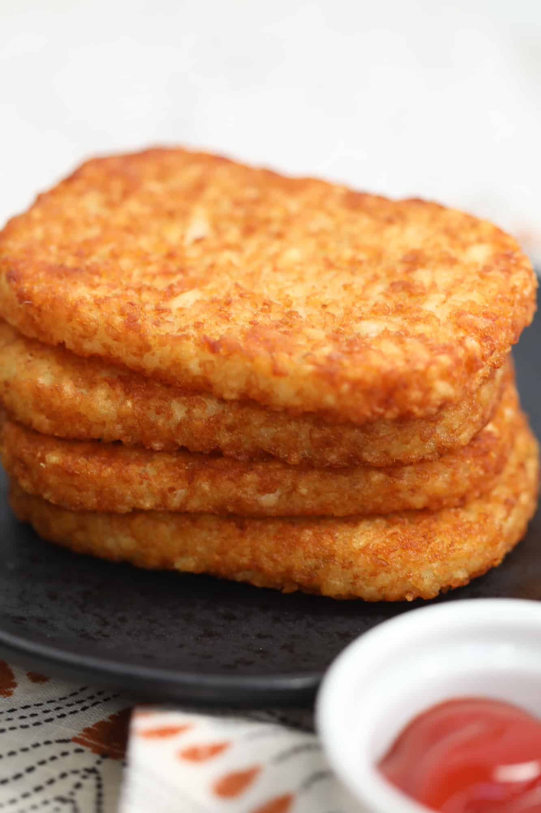
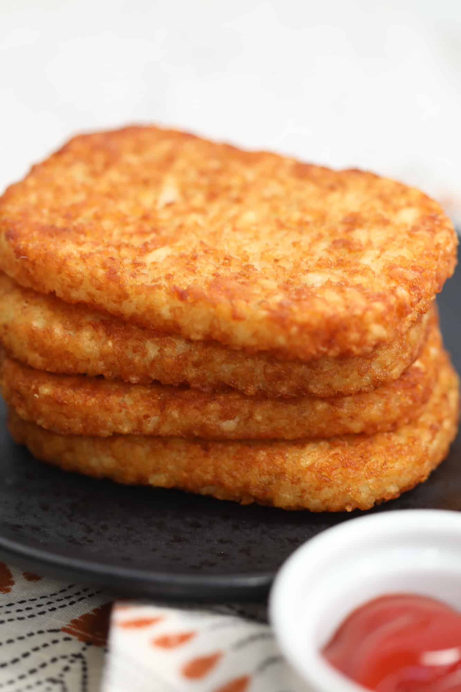

Hashbrowns
Ah, the quintessential breakfast hashbrown from Mcdonald's. Unbeatable right? Or maybe we can make a homemade hash brown that is easy and only 3 ingredients. Maybe we'll win this one at the same time too?
 

Ah, the quintessential breakfast hashbrown from Mcdonald's. Unbeatable right? Or maybe we can make a homemade hash brown that is easy and only 3 ingredients. Maybe we'll win this one at the same time too?
Step 1
Start by rinsing and peeling the russet potatoes, make sure all the potato skin is removed.
Step 2
Using a box grater, grate each potato and place the gratings into a large bowl. Cover with water, agitate to rinse off any excess starch, drain the water from the potatoes, and place the potatoes on a clean cloth.
Step 3
Gather up the sides of the cloth, wind it around and tighten around the potatoes and wring out the excess liquid.
Step 4
In a large heavy bottom pot, add in the duck fat along with the potatoes (while cold) and mix together.
Step 5
Place pot over medium heat. Let heat up from cold, stirring occasionally until it reaches 215°F.
Step 6
Immediately strain the oil out of the potatoes. Reserve the fat to the side.
Step 7
Pour the potatoes out onto a rimmed lined baking sheet. Spread them out and season generously with salt. Mix to incorporate.
Step 8
Once potatoes are cool enough to handle, line a baking sheet with wax paper and place potatoes onto wax paper shaped (by hand) into the classic hash brown oval shape (2.5” wide x 3.5” long, & 3 ¼” thick). Pat potatoes tightly together.
Step 9
Cover with plastic wrap and place in the refrigerator to chill overnight.
Step 10
Heat the reserve duck fat over medium heat until it reaches 355°F.
Step 11
Lower in the cold hash brown and fry for 3-6 minutes. **Recommend doing no more than 2 at a time**
Step 12
Once golden browns and crisp, transfer the hash browns to a wire rack to cool. Salt to taste.
2 lb russet potatoes, peeled and grated
3.5 quarters duck fat
Salt to taste